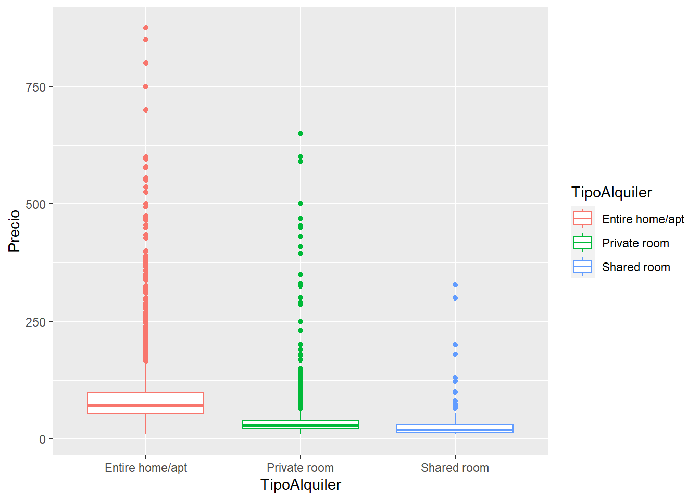
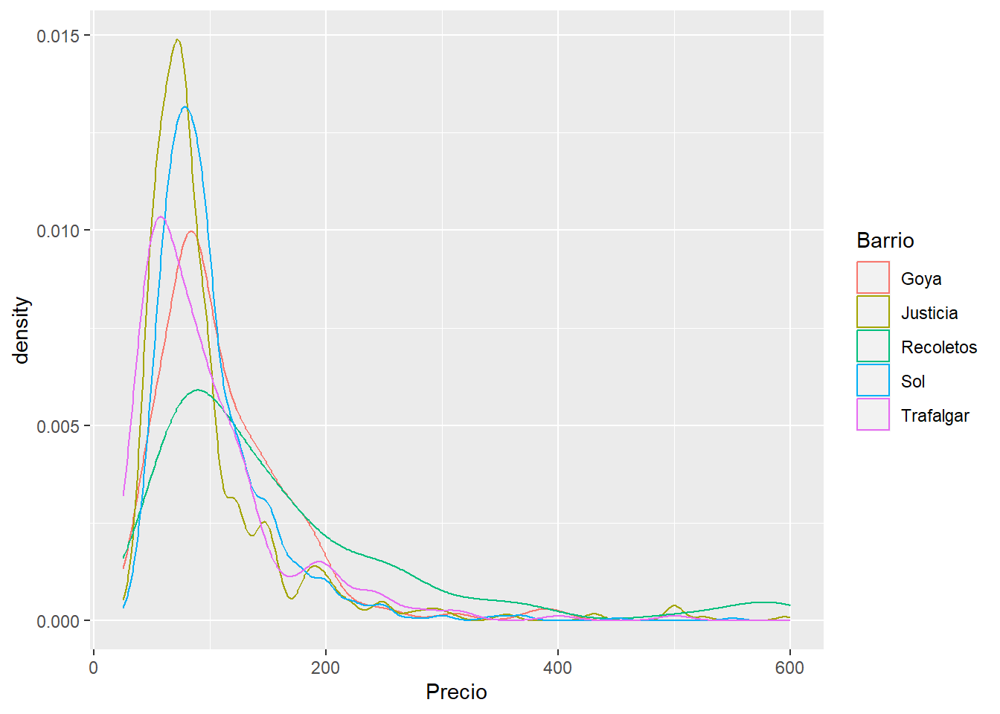
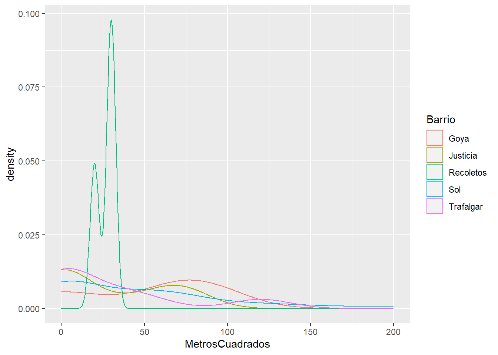
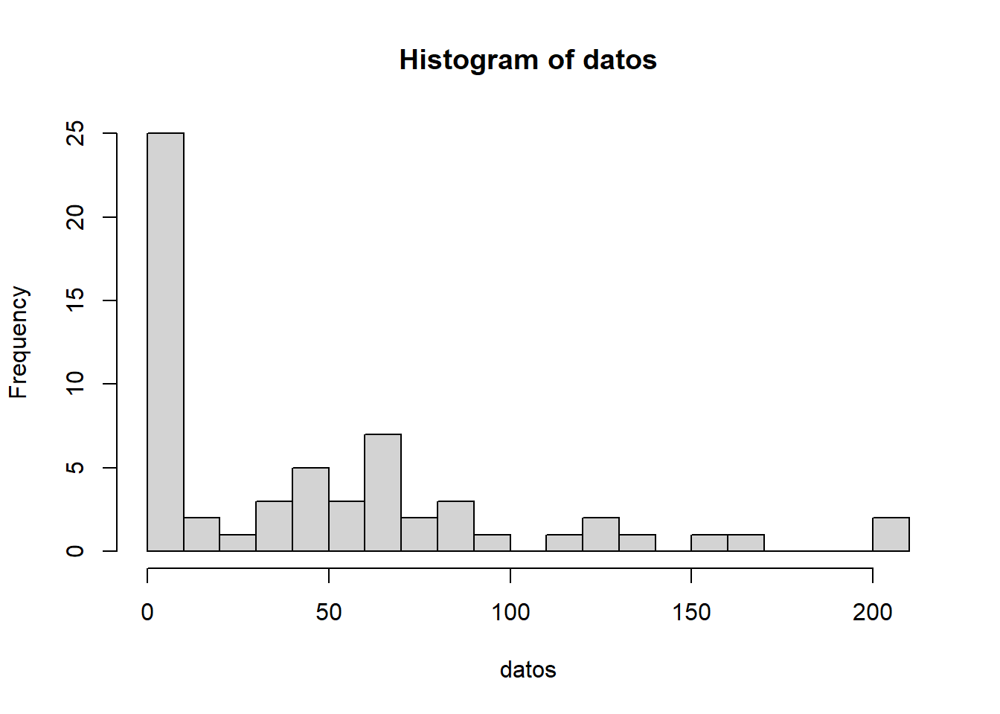

#Importación librerías
library(ggplot2)
library("dslabs")Cargar los datos en un dataframe llamado: airbnb
airbnb<-read.csv('data//airbnb.csv',sep = ',', stringsAsFactors = T)Mostrar las primeras 6 filas del dataframe
head(airbnb,n=6) Zipcode Neighbourhood.Cleansed Property.Type Room.Type Accommodates
1 28004 Universidad Apartment Private room 2
2 28004 Universidad Apartment Entire home/apt 6
3 28004 Universidad Apartment Entire home/apt 3
4 28004 Universidad Loft Entire home/apt 3
5 28015 Universidad Apartment Entire home/apt 5
6 28004 Universidad Apartment Entire home/apt 2
Bathrooms Bedrooms Beds Bed.Type
1 2 1 1 Real Bed
2 1 3 5 Real Bed
3 1 2 2 Real Bed
4 2 1 1 Real Bed
5 1 1 1 Real Bed
6 1 0 1 Real Bed
Amenities
1 TV,Wireless Internet,Kitchen,Pets allowed,Pets live on this property,Buzzer/wireless intercom,Heating,Suitable for events,Washer,First aid kit,Essentials,Lock on bedroom door,Iron
2 TV,Internet,Wireless Internet,Air conditioning,Kitchen,Indoor fireplace,Heating,Family/kid friendly,Washer,Dryer,Smoke detector,Carbon monoxide detector,Essentials,Shampoo
3 TV,Internet,Wireless Internet,Air conditioning,Kitchen,Doorman,Heating,Family/kid friendly,Washer,Essentials,Shampoo,Hangers,Hair dryer,Iron,Laptop friendly workspace
4 TV,Internet,Wireless Internet,Air conditioning,Kitchen,Pets allowed,Breakfast,Elevator in building,Indoor fireplace,Buzzer/wireless intercom,Heating,Washer,Essentials,Shampoo,Hangers,Hair dryer,Iron,Laptop friendly workspace,translation missing: en.hosting_amenity_49,translation missing: en.hosting_amenity_50
5 TV,Wireless Internet,Air conditioning,Kitchen,Smoking allowed,Pets allowed,Elevator in building,Heating,Family/kid friendly,Washer,Essentials,Iron
6 TV,Cable TV,Internet,Wireless Internet,Air conditioning,Wheelchair accessible,Kitchen,Doorman,Elevator in building,Buzzer/wireless intercom,Heating,Washer,Smoke detector,Carbon monoxide detector,First aid kit,Safety card,Fire extinguisher,Essentials,Shampoo,24-hour check-in,Hangers,Hair dryer,Iron,Laptop friendly workspace,Self Check-In,Doorman Entry
Square.Feet Price Review.Scores.Rating
1 NA 35 NA
2 NA 92 96
3 NA 55 91
4 NA 60 100
5 538 75 90
6 NA 55 95Renombrar las columnas de la siguiente forma:
| Nombre original | Nuevo nombre |
|---|---|
| Zipcode | CodigoPostal |
| Neighbourhood.Cleansed | Barrio |
| Property.Type | TipoPropiedad |
| Room.Type | TipoAlquiler |
| Accommodates | MaxOcupantes |
| Bathrooms | NumBanyos |
| Bedrooms | NumDormitorios |
| Beds | NumCamas |
| Bed.Type | TipoCama |
| Amenities | Comodidades |
| Square.Feet | PiesCuadrados |
| Price | Precio |
| Review.Scores.Rating | Puntuacion |
print(cat("Los nombre originales de las columnas son: ", paste0(colnames(airbnb), collapse = ",")))Los nombre originales de las columnas son: Zipcode,Neighbourhood.Cleansed,Property.Type,Room.Type,Accommodates,Bathrooms,Bedrooms,Beds,Bed.Type,Amenities,Square.Feet,Price,Review.Scores.RatingNULL#Renombramos las columnas
colnames(airbnb) <-c("CodigoPostal","Barrio","TipoPropiedad","TipoAlquiler","MaxOcupantes","NumBanyos",
"NumDormitorios","NumCamas","TipoCama","Comodidades","PiesCuadrados","Precio","Puntuacion")cat("Los nombres modificados de las columnas son: ", paste0(colnames(airbnb), collapse = ","))Los nombres modificados de las columnas son: CodigoPostal,Barrio,TipoPropiedad,TipoAlquiler,MaxOcupantes,NumBanyos,NumDormitorios,NumCamas,TipoCama,Comodidades,PiesCuadrados,Precio,PuntuacionCrea una nueva columna llamada MetrosCuadrados a partir de la columna PiesCuadrados.
Ayuda: 1 pie cuadrado son 0,092903 metros cuadrdados
#Creamos la columna "MetrosCuadrados" a partir de "PiesCuadrados"
airbnb$MetrosCuadrados <- airbnb$PiesCuadrados * 0.092903 Miremos el código postal. Es una variable con entradas erróneas. Hay valores como ’‘,’-’ y ‘28’ que deberían ser considerados como NA. Así mismo también debería ser NA todos los que no compiencen por 28, ya que estamos con códigos postales de Madrid
El código postal 28002, 28004 y 28051 tienen entradas repetidas. Por ejemplo las entradas 28002 deberían ir dnetro de 28002
El codigo 2804 debería ser 28004, 2805 deberia ser 28005 y 2815 juncto con 2815 debería ser 28015
Limpia los datos de la columna Codigo Postal
#Antes de la limpieza
cat("El listado de CodigoPostal antes de limpieza es: \n\n")El listado de CodigoPostal antes de limpieza es: airbnb$CodigoPostal |> table(useNA='always') |> sort(decreasing = TRUE)|> data.frame() |> print.data.frame(row.names = FALSE) Var1 Freq
28012 2060
28004 1794
28005 1194
28013 1019
28014 630
28015 600
28045 495
439
28010 384
28008 338
28028 263
28011 250
28001 231
28006 218
28009 216
28007 206
28019 200
28020 192
28003 185
28002 170
28039 160
28025 123
28027 122
28029 110
28017 107
28043 103
28026 93
28042 90
28033 89
28053 85
28038 77
28016 76
28030 73
28036 67
28047 67
28037 65
28041 63
28035 59
28021 58
28050 58
28034 45
28024 44
28018 43
28032 33
28046 32
28022 30
28031 27
28023 23
28044 19
28040 16
28051 16
28054 12
28055 12
28049 3
- 1
20013 1
20126 1
2015 1
25008 1
27004 1
27013 1
28 1
280013 1
28002\n28002 1
2804 1
28048 1
2805 1
28051\n28051 1
28052 1
28056 1
28058 1
28060 1
28094 1
28105 1
2815 1
28850 1
Madrid 28004 1
<NA> 0#Limpieza de datos por la columna "Codigo Postal"
airbnb[which(airbnb$CodigoPostal=="Madrid 28004"),'CodigoPostal'] <- "28004"
airbnb[which(airbnb$CodigoPostal=="2815"),'CodigoPostal'] <- "28105"
airbnb[which(airbnb$CodigoPostal==""),'CodigoPostal'] <- NA
airbnb[which(airbnb$CodigoPostal=="-"),'CodigoPostal'] <- NA
airbnb[which(airbnb$CodigoPostal=="28"),'CodigoPostal'] <- NA
airbnb[which(airbnb$CodigoPostal=="28051\n28051"),'CodigoPostal'] <- "28051"
airbnb[which(airbnb$CodigoPostal=="28002\n28002"),'CodigoPostal'] <- "28002"
airbnb[which(airbnb$CodigoPostal=="2804"),'CodigoPostal'] <- "28040"
airbnb[which(airbnb$CodigoPostal=="2805"),'CodigoPostal'] <- "28050"
airbnb[which(airbnb$CodigoPostal=="280013"),'CodigoPostal'] <- "28013"
airbnb[!grepl("^28\\d{3}$",airbnb$CodigoPostal), "CodigoPostal"] <- NA
##Actualizamos factor para no incluir valores modificados
airbnb$CodigoPostal <- factor(airbnb$CodigoPostal)cat("El listado de CodigoPostal después de limpieza es: \n\n")El listado de CodigoPostal después de limpieza es: airbnb$CodigoPostal |> table(useNA='always') |> sort(decreasing = TRUE) |> data.frame() |> print.data.frame(row.names = FALSE) Var1 Freq
28012 2060
28004 1795
28005 1194
28013 1020
28014 630
28015 600
28045 495
<NA> 447
28010 384
28008 338
28028 263
28011 250
28001 231
28006 218
28009 216
28007 206
28019 200
28020 192
28003 185
28002 171
28039 160
28025 123
28027 122
28029 110
28017 107
28043 103
28026 93
28042 90
28033 89
28053 85
28038 77
28016 76
28030 73
28036 67
28047 67
28037 65
28041 63
28035 59
28050 59
28021 58
28034 45
28024 44
28018 43
28032 33
28046 32
28022 30
28031 27
28023 23
28044 19
28040 17
28051 17
28054 12
28055 12
28049 3
28105 2
28048 1
28052 1
28056 1
28058 1
28060 1
28094 1
28850 1Una vez limpios los datos ¿Cuales son los códigos postales que tenemos?
cat("Hay ", length(unique(airbnb$CodigoPostal)), " codigos postales distintos y son :",paste(unique(airbnb$CodigoPostal), collapse = ","),"\n")Hay 62 codigos postales distintos y son : 28004,28015,28013,28005,28012,28014,28045,NA,28007,28028,28009,28001,28006,28010,28002,28034,28050,28008,28011,28049,28038,28053,28047,28025,28019,28024,28016,28036,28046,28039,28020,28003,28029,28054,28041,28026,28058,28018,28030,28017,28027,28043,28033,28055,28021,28032,28037,28022,28042,28094,28035,28040,28031,28044,28105,28023,28051,28850,28048,28056,28060,28052 ¿Cuales son los 5 códigos postales con más entradas? ¿Y con menos? ¿Cuantas entradas tienen?
tabla_frecuencias <- table(airbnb$CodigoPostal) |> sort(decreasing = TRUE) |> as.data.frame()
colnames(tabla_frecuencias) <- c("Barrio","Entradas")
cat("Los 5 códigos postales con más entradas son: \n\n")Los 5 códigos postales con más entradas son: print.data.frame(tabla_frecuencias[1:5,],row.names = FALSE) Barrio Entradas
28012 2060
28004 1795
28005 1194
28013 1020
28014 630cat("\nLos 5 códigos postales con menos entradas son: \n\n")
Los 5 códigos postales con menos entradas son: tabla_frecuencias <- tabla_frecuencias[order(tabla_frecuencias$Entradas),]
print.data.frame(tabla_frecuencias[1:5,],row.names = FALSE) Barrio Entradas
28048 1
28052 1
28056 1
28058 1
28060 1¿Cuales son los barrios que hay en el código postal 28012?
barrios_cp_28012 <- unique(airbnb[which(airbnb$CodigoPostal == "28012"), "Barrio"])
cat("Los barrios que hay en el código postal 28012 son : \n", paste0(barrios_cp_28012,collapse=","))Los barrios que hay en el código postal 28012 son :
Sol,Acacias,Palos de Moguer,Embajadores,Cortes,Palacio,Universidad,Delicias,Arapiles,Atocha,Goya¿Cuantas entradas hay en cada uno de esos barrios para el codigo postal 28012?
entradas_barrios_cp_28012 <- table(droplevels(airbnb[which(airbnb$CodigoPostal == "28012"), "Barrio"])) |> sort(decreasing = TRUE) |> as.data.frame()
colnames(entradas_barrios_cp_28012) <- c("Barrio","Entradas")
cat("El codigo postal 28012 tienes por barrios las siguientes entradas: \n\n")El codigo postal 28012 tienes por barrios las siguientes entradas: print.data.frame(entradas_barrios_cp_28012,row.names = FALSE) Barrio Entradas
Embajadores 1449
Sol 301
Cortes 216
Palos de Moguer 46
Palacio 27
Acacias 13
Universidad 4
Arapiles 1
Atocha 1
Delicias 1
Goya 1¿Cuantos barrios hay en todo el dataset airbnb? ¿Cuales son?
# Obtener los barrios únicos del dataset airbnb
barrios_unicos <- unique(airbnb$Barrio)
cat("El dataset airbnb tienes: ", length(barrios_unicos), " barrios únicos \nLista de barrios únicos:\n",paste(barrios_unicos, collapse = ","),"\n")El dataset airbnb tienes: 125 barrios únicos
Lista de barrios únicos:
Universidad,Sol,Imperial,Acacias,Chopera,Delicias,Palos de Moguer,Embajadores,Cortes,Atocha,Pacífico,Adelfas,Estrella,Ibiza,Jerónimos,Niño Jesús,Palacio,Justicia,Recoletos,Goya,Fuente del Berro,Arapiles,Trafalgar,Almagro,Guindalera,Lista,Castellana,El Viso,Prosperidad,Valverde,Casa de Campo,El Goloso,Numancia,Cármenes,Puerta del Angel,Lucero,Aluche,San Isidro,Campamento,Comillas,Opañel,Vista Alegre,Ciudad Jardín,Hispanoamérica,Nueva España,Castilla,Bellas Vistas,Cuatro Caminos,Castillejos,Vallehermoso,Almenara,Valdeacederas,Berruguete,Gaztambide,Rios Rosas,Peñagrande,Argüelles,Puerta Bonita,Buenavista,Abrantes,Orcasur,San Fermín,Almendrales,Pradolongo,Portazgo,Entrevías,San Diego,Palomeras Bajas,Fontarrón,Vinateros,Ventas,Pueblo Nuevo,Quintana,Concepción,San Juan Bautista,Costillares,Piovera,Canillas,Pinar del Rey,Apostol Santiago,San Andrés,Valdefuentes,Butarque,Los Angeles,Casco Histórico de Vicálvaro,Simancas,Rejas,Salvador,Casco Histórico de Barajas,Pilar,La Paz,Mirasierra,Ciudad Universitaria,Moscardó,Palomeras Sureste,Marroquina,Media Legua,Los Rosales,Casco Histórico de Vallecas,Timón,Corralejos,Cuatro Vientos,Colina,San Cristobal,Alameda de Osuna,Aeropuerto,Palomas,Zofío,Aguilas,Legazpi,Fuentelareina,Aravaca,Ambroz,Canillejas,Valdezarza,Amposta,San Pascual,Santa Eugenia,Arcos,Rosas,Valdemarín,El Plantío,Hellín,Pavones,Orcasitas ¿Cuales son los 5 barrios que tienen mayor número entradas?
barrios_aparicion <- table(airbnb$Barrio)|> sort(decreasing = TRUE)|> as.data.frame()
colnames(barrios_aparicion) <- c("Barrio","Entradas")
# Mostrar los 5 barrios con mayor número de entradas
cat("Los 5 barrios con mayor número de entradas en el dataset airbnb son:\n\n")Los 5 barrios con mayor número de entradas en el dataset airbnb son:print.data.frame(barrios_aparicion[1:5,],row.names = FALSE) Barrio Entradas
Embajadores 1844
Universidad 1358
Palacio 1083
Sol 940
Justicia 785¿Cuantos Tipos de Alquiler diferentes hay? ¿Cuales son? ¿Cuantas entradas en el dataframe hay por cada tipo?
# Contar el número de entradas por cada tipo de alquiler utilizando la función length en table
tipos_alquiler <- unique(airbnb$TipoAlquiler)
tipos_alquiler_entradas <- table(airbnb$TipoAlquiler)|> sort( decreasing = TRUE)|> as.data.frame()
colnames(tipos_alquiler_entradas) <- c("Tipo apartamento","Entradas")
cat("Hay ",length(tipos_alquiler)," tipos de alquiler diferentes. \n\nLos tipos de alquileres son :",paste(tipos_alquiler,collapse=" , "),"\n\nLa entradas que hay por cada tipo de alquiler son: \n\n")Hay 3 tipos de alquiler diferentes.
Los tipos de alquileres son : Private room , Entire home/apt , Shared room
La entradas que hay por cada tipo de alquiler son: print.data.frame(tipos_alquiler_entradas,row.names=FALSE) Tipo apartamento Entradas
Entire home/apt 7903
Private room 5113
Shared room 191Muestra el diagrama de cajas del precio para cada uno de los diferentes Tipos de Alquiler
# Cargar la librería necesaria para el gráfico de cajas
library(ggplot2)
#Generar el diagrama de cajas por tipo de alquiler y de cada color pintamos el tipo de alquiler.
ggplot(data=airbnb, aes(x=TipoAlquiler, y=Precio, color=TipoAlquiler))+geom_boxplot(na.rm = TRUE)
Cual es el precio medio de alquiler de cada uno, la diferencia que hay ¿es estadísticamente significativa? ¿Con que test lo comprobarías?
tipos_alquiler <-unique(airbnb["TipoAlquiler"])
for(alquiler in t(tipos_alquiler)){
cat("El precio medio de alquiler en ", alquiler ," es: " , mean(airbnb[which(airbnb$TipoAlquiler == alquiler),"Precio"],na.rm=TRUE) ,"\n")
}El precio medio de alquiler en Private room es: 34.25514
El precio medio de alquiler en Entire home/apt es: 87.29661
El precio medio de alquiler en Shared room es: 29.8534 Para comprobar si son estadísticamente significativas hay que hacer los siguientes pasos:
Como tenemos 3 tipos de alquiler distintos , primero tenemos que comprobar si siguen una distribución gaussiana y para ello tenemos que realizarle a cada tipo de alquiler el Shapiro-Wilk. No podemos usar t de Student porque es solo para dos grupos.
Las hipótesis que seguiremos para cada una de ellas será:
\(H_0\): La variable presenta una distribución normal
\(H_1\): La variable presenta una distribución no normal
La decisión que tomaremos después de aplicar el test Shapiro será:
p-valor > 0.05 No rechazar H0 (El tipo de alquiler presenta una distribución normal)
p-valor < 0.05 Rechazar H0 (El tipo de alquiler no presenta una distribución normal)
for(alquiler in levels(airbnb$TipoAlquiler)){
precios_alquiler <- airbnb$Precio[airbnb$TipoAlquiler==alquiler]
if(length(precios_alquiler)>5000){
#El test de Shapiro en R solo funciona si hay entre 3 y 5000 entradas , por lo cual si en el caso que haya mas de 5000 entradas hay que hacer un sample para obtener solo 5000
precios_alquiler<- sample(precios_alquiler,5000, replace = TRUE)
}
cat("Tipo alquiler ",alquiler," p-value = " ,shapiro.test(precios_alquiler)$p.value,"\n")
}Tipo alquiler Entire home/apt p-value = 4.67477e-70
Tipo alquiler Private room p-value = 1.817303e-85
Tipo alquiler Shared room p-value = 4.516721e-24 Como el p valor es menor que 0.05 en los tres casos se rechaza la hipótesis nula (H0), por lo tanto, los precios según el tipo de alquiler no sigue una distribución normal.
Ya que sabemos que no siguen la misma distribución gaussiana procederemos a usar el test para aquellos grupos que no siguen la misma distribución y es el Kruskal-Wallis . No usaremos ANOVA test Welch porque no siguen una distribución gaussiana.
Las hipótesis que seguiremos para cada una de ellas será:
\(H_0\): Los tipos de alquiler tienen misma media.
\(H_1\): Los tipos de alquiler tienen diferente media al menos unos de ellos.
La decisión que tomaremos después de aplicar el test Shapiro será:
p-valor > 0.05 No rechazar H0 (tomas las medias son similares)
p-valor < 0.05 Rechazar H0 (hay al menos una que no es similar a las demás)
kruskal.test(Precio ~ TipoAlquiler, data=airbnb)
Kruskal-Wallis rank sum test
data: Precio by TipoAlquiler
Kruskal-Wallis chi-squared = 7235.6, df = 2, p-value < 2.2e-16Como el p-valor (2e-16) nos da muy inferior a 0.05 podemos rechazar la hipótesis nula H0 , por lo tanto, los precios según el tipo de alquiler hay al menos uno que no tiene la misma media.
Filtra el dataframe cuyos tipo de alquiler sea ‘Entire home/apt’ y guardalo en un dataframe llamado airbnb_entire. Estas serán las entradas que tienen un alquiler del piso completo.
airbnb_entire <-airbnb[which(airbnb$TipoAlquiler == "Entire home/apt"), ] ¿Cuales son los 5 barrios que tienen un mayor número de apartamentos enteros en alquiler? Nota: Mirar solo en airbnb_entire. A partir de este punto y hasta que se diga lo contrario partiremos de airbnb_entire.
barrios_por_entradas<- table(airbnb_entire$Barrio)|> sort(decreasing = TRUE)|> as.data.frame()
colnames(barrios_por_entradas) <-c("Barrio","Entradas")
cat("Los 5 barrios que tienen un mayor número de apartamentos enteros en alquiler son: \n\n")Los 5 barrios que tienen un mayor número de apartamentos enteros en alquiler son: print.data.frame(barrios_por_entradas[1:5,],row.names=FALSE) Barrio Entradas
Embajadores 1228
Universidad 984
Palacio 769
Sol 701
Cortes 574¿Cuales son los 5 barrios que tienen un mayor precio medio de alquiler para apartamentos enteros (es decir, del dataframe airbnb_entire)?
barrios_por_precio_medio <- aggregate(Precio ~ Barrio, FUN = mean, data = airbnb_entire)
barrios_por_precio_medio <- barrios_por_precio_medio[order(-barrios_por_precio_medio$Precio),]
cat("Los 5 barrios que tienen un mayor precio medio de alquiler para apartamentos enteros son: \n\n")Los 5 barrios que tienen un mayor precio medio de alquiler para apartamentos enteros son: print.data.frame(barrios_por_precio_medio[1:5,c("Barrio","Precio")],row.names = FALSE) Barrio Precio
Palomas 309.7500
Fuentelareina 180.0000
Recoletos 161.9254
El Plantío 150.0000
Castellana 141.3889¿Cuantos apartamentos hay en cada uno de esos barrios?
vector_barrios_precio_medio <- barrios_por_precio_medio[1:5, "Barrio"]top_5_precio_medio <- subset(airbnb_entire, Barrio %in% vector_barrios_precio_medio)
top_5_precio_medio <- table(droplevels(top_5_precio_medio$Barrio)) |> sort(decreasing = TRUE)|> as.data.frame()
colnames(top_5_precio_medio) <-c("Barrio","Entradas")
cat("En cada uno de esos barrios con mayor precio medio por barrio hay:\n\n")En cada uno de esos barrios con mayor precio medio por barrio hay:print.data.frame(top_5_precio_medio[1:5,],row.names=FALSE) Barrio Entradas
Recoletos 135
Castellana 73
Palomas 4
Fuentelareina 2
El Plantío 1Mostrar una dataframe con el nombre del barrio, el precio y el número de entradas.
Ayuda: Podeis crear un nuevo dataframe con las columnas “Barrio” y “Freq” que contenga el número de entradas en cada barrio y hacer un merge con el dataframe del punto anterior.
barrio_resumen <- merge(barrios_por_precio_medio,barrios_por_entradas, by = "Barrio",all=TRUE)
barrio_resumen$Precio <- round(barrio_resumen$Precio,2)
colnames(barrio_resumen) <- c("Barrio","Precio","Entradas")
cat("Dataframe con nombre de barrio, precio medio y número de entradas :\n\n")Dataframe con nombre de barrio, precio medio y número de entradas :barrio_resumen Barrio Precio Entradas
1 Abrantes 46.00 3
2 Acacias 68.16 61
3 Adelfas 68.73 33
4 Aeropuerto 38.00 2
5 Aguilas 54.50 2
6 Alameda de Osuna 138.75 4
7 Almagro 109.19 97
8 Almenara 65.68 25
9 Almendrales 77.50 18
10 Aluche 55.89 9
11 Ambroz 34.50 2
12 Amposta NA 0
13 Apostol Santiago 96.60 5
14 Arapiles 69.62 98
15 Aravaca 66.33 9
16 Arcos 100.50 4
17 Argüelles 89.57 143
18 Atocha 71.44 9
19 Bellas Vistas 51.78 45
20 Berruguete 53.86 35
21 Buenavista 57.92 12
22 Butarque 42.00 1
23 Campamento 45.56 9
24 Canillas 105.80 15
25 Canillejas 91.67 3
26 Cármenes 78.00 8
27 Casa de Campo 98.85 41
28 Casco Histórico de Barajas 141.25 8
29 Casco Histórico de Vallecas 61.11 18
30 Casco Histórico de Vicálvaro 73.88 8
31 Castellana 141.39 73
32 Castilla 68.67 21
33 Castillejos 88.70 44
34 Chopera 55.03 34
35 Ciudad Jardín 87.62 32
36 Ciudad Universitaria 138.31 13
37 Colina 64.43 7
38 Comillas 56.67 21
39 Concepción 61.94 16
40 Corralejos NA 0
41 Cortes 94.39 574
42 Costillares 95.08 13
43 Cuatro Caminos 76.65 72
44 Cuatro Vientos NA 0
45 Delicias 66.00 51
46 El Goloso NA 0
47 El Plantío 150.00 1
48 El Viso 76.38 24
49 Embajadores 73.70 1228
50 Entrevías 56.25 4
51 Estrella 92.67 3
52 Fontarrón 51.80 5
53 Fuente del Berro 70.32 38
54 Fuentelareina 180.00 2
55 Gaztambide 86.69 61
56 Goya 111.34 142
57 Guindalera 76.99 82
58 Hellín 42.00 1
59 Hispanoamérica 104.44 52
60 Ibiza 102.62 64
61 Imperial 61.43 42
62 Jerónimos 131.82 62
63 Justicia 98.25 534
64 La Paz 65.33 3
65 Legazpi 79.29 14
66 Lista 90.11 72
67 Los Angeles 69.40 5
68 Los Rosales 75.00 2
69 Lucero 68.31 13
70 Marroquina 50.00 2
71 Media Legua 72.10 10
72 Mirasierra 101.29 7
73 Moscardó 56.06 18
74 Niño Jesús 89.23 15
75 Nueva España 127.31 42
76 Numancia 60.59 34
77 Opañel 51.60 10
78 Orcasitas NA 0
79 Orcasur 45.00 1
80 Pacífico 89.73 62
81 Palacio 93.31 769
82 Palomas 309.75 4
83 Palomeras Bajas 61.10 10
84 Palomeras Sureste 31.50 4
85 Palos de Moguer 73.32 135
86 Pavones 48.00 1
87 Peñagrande 127.64 11
88 Pilar 62.50 10
89 Pinar del Rey 79.89 9
90 Piovera 85.00 3
91 Portazgo 55.00 1
92 Pradolongo 61.33 3
93 Prosperidad 79.47 49
94 Pueblo Nuevo 67.46 13
95 Puerta Bonita 88.00 14
96 Puerta del Angel 59.68 77
97 Quintana 65.00 17
98 Recoletos 161.93 135
99 Rejas 64.18 11
100 Rios Rosas 83.00 60
101 Rosas NA 0
102 Salvador 66.40 5
103 San Andrés 50.92 12
104 San Cristobal 56.50 2
105 San Diego 44.34 32
106 San Fermín 63.50 8
107 San Isidro 76.10 39
108 San Juan Bautista 75.54 13
109 San Pascual 72.43 7
110 Santa Eugenia 47.00 2
111 Simancas 57.14 21
112 Sol 100.75 701
113 Timón 72.20 5
114 Trafalgar 98.58 223
115 Universidad 79.40 984
116 Valdeacederas 67.36 25
117 Valdefuentes 84.25 24
118 Valdemarín 70.50 2
119 Valdezarza 53.33 3
120 Vallehermoso 92.39 33
121 Valverde 71.58 19
122 Ventas 50.04 26
123 Vinateros 102.50 2
124 Vista Alegre 59.45 22
125 Zofío 48.00 4Partiendo del dataframe anterior, muestra los 5 barrios con mayor precio, pero que tengan más de 100 entradas de alquiler.
top_5_mayor_precio_mas_100_entrada <- subset(barrio_resumen,Entradas >= 100)
top_5_mayor_precio_mas_100_entrada <- top_5_mayor_precio_mas_100_entrada[order(-top_5_mayor_precio_mas_100_entrada$Precio),]
vector_100_entradas <- top_5_mayor_precio_mas_100_entrada[1:5,"Barrio"]
cat("Los 5 barrios con mayor precio medio de alquiler son:\n\n")Los 5 barrios con mayor precio medio de alquiler son:print.data.frame(top_5_mayor_precio_mas_100_entrada[1:5,],row.names=FALSE) Barrio Precio Entradas
Recoletos 161.93 135
Goya 111.34 142
Sol 100.75 701
Trafalgar 98.58 223
Justicia 98.25 534Dibuja el diagrama de densidad de distribución de los diferentes precios. Serían 5 gráficas, una por cada barrio.
#Pìntandolo en el mismo gráfico
barrio_a_dibujar <- subset(airbnb_entire,Barrio %in% vector_100_entradas)
ggplot(barrio_a_dibujar,aes(x=Precio,color=Barrio))+
geom_density(na.rm = FALSE)Warning: Removed 1 rows containing non-finite values (`stat_density()`).
Calcula el tamaño medio, en metros cuadrados, para los 5 barrios anteriores y muestralo en el mismo dataframe junto con el precio y número de entradas
barrios_por_metros_cuadrados_medio <- aggregate(MetrosCuadrados ~ Barrio, FUN = mean, data = airbnb_entire)
barrio_resumen <- merge(barrio_resumen,barrios_por_metros_cuadrados_medio, by = "Barrio",all=TRUE)
barrio_resumen$MetrosCuadrados <- round(barrio_resumen$MetrosCuadrados,2)barrio_resumen_ <- subset(barrio_resumen, Barrio %in% vector_100_entradas)
cat("Los barrios con más de 100 entradas junto a su precio medio y media de metros cuadrados:\n\n")Los barrios con más de 100 entradas junto a su precio medio y media de metros cuadrados:barrio_resumen_ Barrio Precio Entradas MetrosCuadrados
56 Goya 111.34 142 51.69
63 Justicia 98.25 534 28.53
98 Recoletos 161.93 135 26.66
112 Sol 100.75 701 45.62
114 Trafalgar 98.58 223 29.30Dibuja el diagrama de densidad de distribución de los diferentes tamaños de apartamentos. Serían 5 gráficas, una por cada barrio.
barrio_a_dibujar <- subset(airbnb_entire,Barrio %in% vector_100_entradas)
ggplot(barrio_a_dibujar,aes(x=MetrosCuadrados,color=Barrio))+
geom_density(na.rm = TRUE)
Esta claro que las medias de metros cuadrados de cada uno de estos 5 barrios parecen ser diferentes, pero ¿son estadísticamente diferentes? ¿Que test habría que usar para comprobarlo?
Para comprobar si son estadísticamente significativas hay que hacer los siguientes pasos:
Como tenemos 5 barrios , primero tenemos que comprobar si siguen una distribución gaussiana y para ello tenemos que realizarle a cada tipo de alquiler el Shapiro-Wilk. No podemos usar t de Student porque es solo para dos grupos.
Las hipótesis que seguiremos para cada una de ellas será:
$H_0$: La variable presenta una distribución normal
$H_1$: La variable presenta una distribución no normal
La decisión que tomaremos después de aplicar el test Shapiro será:
p-valor > 0.05 No rechazar H0 (El tipo de alquiler presenta una distribución normal)
p-valor < 0.05 Rechazar H0 (El tipo de alquiler no presenta una distribución normal)
for(barrio in top_5_mayor_precio_mas_100_entrada[1:5,"Barrio"]){
metros_cuadrados <- airbnb_entire$Precio[airbnb_entire$Barrio==barrio]
if(length(metros_cuadrados)>5000){
metros_cuadrados<- sample(precios_alquiler,5000, replace = TRUE)
}
cat("Barrio ",barrio," p-value = " ,shapiro.test(metros_cuadrados)$p.value,"\n")
}Barrio Recoletos p-value = 2.800346e-13
Barrio Goya p-value = 2.76798e-11
Barrio Sol p-value = 6.822961e-30
Barrio Trafalgar p-value = 5.989247e-17
Barrio Justicia p-value = 6.685769e-32 Como el p valor es menor que 0.05 en los cinco casos se rechaza la hipótesis nula (H0), por lo tanto, la media de los metros cuadrados no sigue una distribución normal.
Ya que sabemos que no siguen la misma distribución gaussiana procederemos a usar el test para aquellos grupos que no siguen la misma distribución y es el Kruskal-Wallis . No usaremos ANOVA test Welch porque no siguen una distribución gaussiana.
Las hipótesis que seguiremos para cada una de ellas será:
$H_0$: La media de los metros cuadrados por barrio tienen misma media.
$H_1$: La media de los metros cuadrados por barrio tienen diferente media al menos unos de ellos.
La decisión que tomaremos después de aplicar el test Shapiro será
p-valor > 0.05 No rechazar H0 (tomas las medias son similares)
p-valor < 0.05 Rechazar H0 (hay al menos una que no es similar a las demás)
kruskal.test(MetrosCuadrados ~ Barrio, data=airbnb_entire)
Kruskal-Wallis rank sum test
data: MetrosCuadrados by Barrio
Kruskal-Wallis chi-squared = 78.411, df = 55, p-value = 0.02077Como el p-valor (0.02077) nos da inferior a 0.05 podemos rechazar la hipótesis nula H0 , por lo tanto, la media de los metros cuadrados por barrio hay al menos uno que no tiene la misma media.
Para únicamente los pisos de alquiler en el barrio de Sol:
barrio_sol<-subset(airbnb_entire,Barrio=="Sol")
barrio_sol<-subset(airbnb_entire,Barrio=="Sol")Objetivo : Calcular un modelo lineal que combine alguna de estas variables: * NumBanyos * NumDormitorios * MaxOcupantes * MetrosCuadrados
Primero calculamos la correlación para ver como se relacionan estas variables entre sí.
Vamos a realizar la correlación entre todas las variables numéricas del dataset.
variable_numericas <- c("MaxOcupantes","NumBanyos","NumDormitorios","NumCamas","Puntuacion","MetrosCuadrados","Precio")round(cor(barrio_sol[variable_numericas],use="complete.obs"),2) MaxOcupantes NumBanyos NumDormitorios NumCamas Puntuacion
MaxOcupantes 1.00 0.70 0.79 0.93 -0.18
NumBanyos 0.70 1.00 0.69 0.61 -0.20
NumDormitorios 0.79 0.69 1.00 0.76 -0.05
NumCamas 0.93 0.61 0.76 1.00 -0.22
Puntuacion -0.18 -0.20 -0.05 -0.22 1.00
MetrosCuadrados 0.43 0.48 0.57 0.35 0.01
Precio 0.53 0.60 0.72 0.45 0.12
MetrosCuadrados Precio
MaxOcupantes 0.43 0.53
NumBanyos 0.48 0.60
NumDormitorios 0.57 0.72
NumCamas 0.35 0.45
Puntuacion 0.01 0.12
MetrosCuadrados 1.00 0.64
Precio 0.64 1.00Observamos que la puntuación no tiene buena correlación con las demas por lo cual la eliminamos para los siguientes pasos.
variable_numericas <- c("MaxOcupantes","NumBanyos","NumDormitorios","NumCamas","MetrosCuadrados","Precio")Se observa que la correlación entre el número de dormitorios y los metros cuadrados es sorprendentemente baja. ¿Son de fiar esos números?
Entre el número de dormitorios y los metros cuadrados se observa una correlación no muy alta 0.57 y usualmente debería ser mas correlacionada debido a que son variables que tienen mucha relación ( a mayor número de dormitorios mayor serán los metros cuadrados de este).
Mediante un histograma o curvas de densidad podemos descartar números que no tienen sentido en el dataframe barrio_sol, para tener una matriz de correlación que tenga mayor sentido.
datos <- na.omit(barrio_sol$MetrosCuadrados)
hist(datos, breaks = seq(min(datos), max(datos) + 10, by = 10))
Mediante el histograma observamos que hay muchos datos que no son coherentes ( pisos con 0 metros cuadrados) . Por lo cual eliminaremos aquello con aquellos pisos de barrio del Sol que tienen al menos 30 metros cuadrados y que tendan valores omitidos.
barrio_sol_modelo <- subset(barrio_sol,MetrosCuadrados >= 30)
barrio_sol_modelo <- na.omit(barrio_sol_modelo)Volvemo a realizar la correlación de los datos con la limpieza de datos en la columna “MetrosCuadrados”
round(cor(barrio_sol[variable_numericas],use="complete.obs"),digits=2) MaxOcupantes NumBanyos NumDormitorios NumCamas MetrosCuadrados
MaxOcupantes 1.00 0.70 0.79 0.93 0.43
NumBanyos 0.70 1.00 0.69 0.61 0.48
NumDormitorios 0.79 0.69 1.00 0.76 0.57
NumCamas 0.93 0.61 0.76 1.00 0.35
MetrosCuadrados 0.43 0.48 0.57 0.35 1.00
Precio 0.53 0.60 0.72 0.45 0.64
Precio
MaxOcupantes 0.53
NumBanyos 0.60
NumDormitorios 0.72
NumCamas 0.45
MetrosCuadrados 0.64
Precio 1.00Como se puede comprobar en la nueva matriz de correlaciones la relación entre metros cuadrados y y número de dormitorios ha subido de 0.57 a 0.83 debido a la limpieza de datos hecha.
Una vez que hayamos filtrado los datos correspondientes calcular el valor o la combinación de valores que mejor nos permite obtener el precio de un inmueble.
model1<-lm(data=barrio_sol_modelo,formula = Precio~NumBanyos+NumCamas+NumDormitorios+MaxOcupantes+MetrosCuadrados)
summary(model1)
Call:
lm(formula = Precio ~ NumBanyos + NumCamas + NumDormitorios +
MaxOcupantes + MetrosCuadrados, data = barrio_sol_modelo)
Residuals:
Min 1Q Median 3Q Max
-70.011 -16.053 -0.836 19.627 66.509
Coefficients:
Estimate Std. Error t value Pr(>|t|)
(Intercept) 16.9123 15.1344 1.117 0.27442
NumBanyos 8.5530 14.4976 0.590 0.56051
NumCamas -7.8542 5.6971 -1.379 0.18022
NumDormitorios 31.4809 9.1192 3.452 0.00199 **
MaxOcupantes 8.2045 6.0911 1.347 0.19008
MetrosCuadrados 0.1523 0.2087 0.730 0.47210
---
Signif. codes: 0 '***' 0.001 '**' 0.01 '*' 0.05 '.' 0.1 ' ' 1
Residual standard error: 29.39 on 25 degrees of freedom
Multiple R-squared: 0.8113, Adjusted R-squared: 0.7735
F-statistic: 21.5 on 5 and 25 DF, p-value: 2.547e-08Observamos que la variabla que nos aporta mayor p-valor es NumDormitorios y que por cada dormitorio mas el precio aumenta 31 € , seguida de número de baños , MaxOcupantes y MetrosCuadrados. Por último tenemos la variable Numcamas que nos resta valor al precio por cada una que tiene.
Calculamos ahora otra vez el modelo lineal quitando las variables menos significaticas que en este caso sería NumCamas y MetrosCuadrados
model2<-lm(data=barrio_sol_modelo,formula = Precio~NumBanyos+NumDormitorios+MaxOcupantes)
summary(model2)
Call:
lm(formula = Precio ~ NumBanyos + NumDormitorios + MaxOcupantes,
data = barrio_sol_modelo)
Residuals:
Min 1Q Median 3Q Max
-80.196 -14.727 -0.301 18.288 62.586
Coefficients:
Estimate Std. Error t value Pr(>|t|)
(Intercept) 29.004 12.905 2.248 0.033 *
NumBanyos 10.228 14.528 0.704 0.487
NumDormitorios 32.112 6.557 4.897 4.02e-05 ***
MaxOcupantes 2.739 4.450 0.616 0.543
---
Signif. codes: 0 '***' 0.001 '**' 0.01 '*' 0.05 '.' 0.1 ' ' 1
Residual standard error: 29.73 on 27 degrees of freedom
Multiple R-squared: 0.7915, Adjusted R-squared: 0.7683
F-statistic: 34.16 on 3 and 27 DF, p-value: 2.46e-09Con este nuevo modelo lineal con soló 3 variables tiene un R-squared un poco peor pero es lo normal debido a cómo funciona R y el Residual standard error ha bajado un poco.
¿Que variable es más fiable para conocer el precio de un inmueble, el número de habitaciones o los metros cuadrados?
Es más fiable la variable número de habitaciones respecto al de metros cuadrados debido a que en el primer modelo realizado el número de habitaciones incrementa el precio 31.48 € por cada una mientras que los metros cuadrados aumenta por cada uno 0.1523 € por cada uno. Esto también es debido que por cada unidad de número de habitaciones tiene mayor relevacia en el modelo que por cada unidad de metros cuadrados.
Además el p-valor de número de habitaciones es de 0.00199 que es bastante significativo respecto al de metros cuadrados que es de 0.47210 que no aporta tanto valor.
Responde con su correspondiente margen de error del 95%, ¿cuantos euros incrementa el precio del alquiler por cada metro cuadrado extra del piso?
#Creamos el modelo lineal para el precio dependiendo de los metros cuadrados
modelMetrosCuadrados<-lm(data=barrio_sol_modelo,formula = Precio ~ MetrosCuadrados)
#Obtenemos el intervalo de confianza para el modelo anterior para el margen de error del 95%
confintMetrosCuadrados <- confint(modelMetrosCuadrados,level = 0.95)cat("El precio del alquiler aumenta",modelMetrosCuadrados$coefficients["MetrosCuadrados"],"por cada metro cuadrado extras del piso siguiendo un margen de erro del 95% el margen es: \n",
"[",confintMetrosCuadrados["MetrosCuadrados","2.5 %"],",",
confintMetrosCuadrados["MetrosCuadrados","97.5 %"],"]")El precio del alquiler aumenta 1.030491 por cada metro cuadrado extras del piso siguiendo un margen de erro del 95% el margen es:
[ 0.7069076 , 1.354075 ]Responde con su correspondiente margen de error del 95%, ¿cuantos euros incrementa el precio del alquiler por cada habitación?
#Creamos el modelo lineal para el precio dependiendo del numero de domitorios
modelNumDormitorios<-lm(data=barrio_sol_modelo,formula = Precio ~ NumDormitorios)
#Obtenemos el intervalo de confianza para el modelo anterior para el margen de error del 95%
confintNumDormitorios <- confint(modelNumDormitorios,level = 0.95)cat("El precio del alquiler aumenta",modelNumDormitorios$coefficients["NumDormitorios"],"por cada metro cuadrado extras del piso siguiendo un margen de erro del 95% el margen es: \n",
"[",confintNumDormitorios["NumDormitorios","2.5 %"],",",
confintNumDormitorios["NumDormitorios","97.5 %"],"]")El precio del alquiler aumenta 40.15548 por cada metro cuadrado extras del piso siguiendo un margen de erro del 95% el margen es:
[ 31.86153 , 48.44942 ]¿Cual es la probabilidad de encontrar, en el barrio de Sol, un apartamento en alquiler con 3 dormitorios? ¿Cual es el intervalo de confianza de esa probabilidad?
#Numero de apartamentos en el Barrio de sol
barrio_sol_apart <- nrow(barrio_sol)
#Numero de apartamentos en el Barrio de sol con 3 dormtorios
barrio_sol_3_dormitorios_apart <- nrow(subset(barrio_sol,NumDormitorios == 3))
#Aplicamos la binomial con un nivel de confianza del 95%
binomtest <- binom.test(barrio_sol_3_dormitorios_apart,barrio_sol_apart,conf.level=0.95)
cat("La probabilidad de encontrar, en el barrio de Sol,\nun apartamento en alquiler con 3 habitaciones es\n",round(binomtest$estimate,4),"con un intervalo de confianza al ",attr(binomtest$conf.int, "conf.level")," es:\n","[",round(binomtest$conf.int[1],4),",",round(binomtest$conf.int[2],4),"]")La probabilidad de encontrar, en el barrio de Sol,
un apartamento en alquiler con 3 habitaciones es
0.0785 con un intervalo de confianza al 0.95 es:
[ 0.0597 , 0.1009 ]